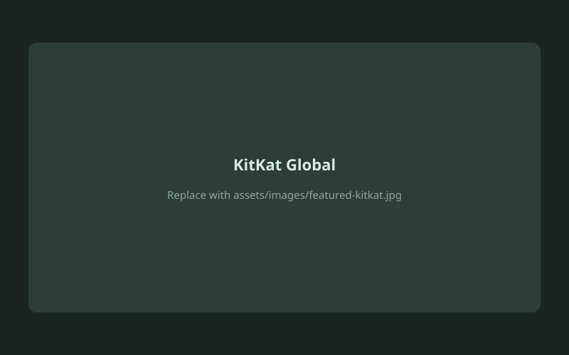
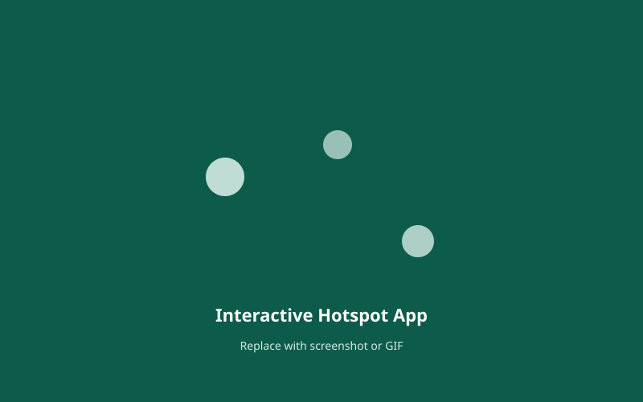
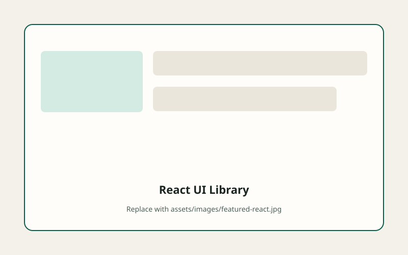
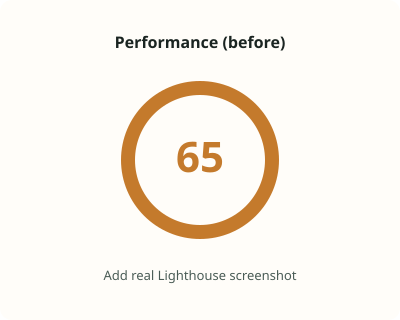
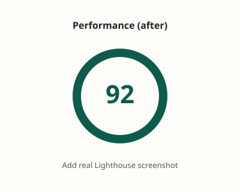

Open to frontend roles · contract · remote-friendly · South Africa
Frontend Engineer · South Africa
Vumile Sibande
I ship accessible, performant frontends—from enterprise Drupal and CMS platforms to React, Next.js, and interactive product UI.
Frontend Engineer with 10+ years building scalable, multilingual web platforms, with a strong foundation in Drupal-based architectures. Skilled in component-driven development, performance optimization, and debugging complex render-layer issues—plus hands-on modern stack work in React and Next.js.
10+
Years shipping production UI
Drupal
Enterprise CMS & Twig
React
Next.js · components · UI systems
Featured work
See what I build within seconds—enterprise brand platforms and interactive frontends you can open live.

Interactive Hotspot Application
Map interactions, filters, and region-based content exploration.
Read case study
Measurable impact
Approximate results from production work—focused on outcomes recruiters can scan quickly.
- 65 → 90+ Lighthouse Performance on key market pages via asset and script optimization
- 10+ markets KitKat & Purina frontend delivery across multilingual Drupal properties
- 54 countries Interactive map UI with hotspots, filters, and shareable deep links
- Cannes 2026 Frontend support for shortlisted KitKat Japan Juken campaign work
Why hire me
Whether your stack is Drupal, WordPress, React, or a hybrid CMS plus SPA—I bring production discipline, clear communication, and code you can maintain after launch.
-
Any frontend stack
HTML, CSS, SCSS, JavaScript, Bootstrap, Twig, React, and Next.js—comfortable joining greenfield UI, legacy CMS themes, or upgrade programmes.
-
Enterprise delivery
Global brand platforms at VML—KitKat, Purina, Viceroy, and more—multilingual releases, campaigns, and stable production support.
-
Performance & quality
Core Web Vitals, asset and script optimization, accessibility (WCAG/ARIA), and systematic debugging across render and integration layers.
-
Team-ready
Agile delivery with backend, QA, and DevOps—design handoff from Figma, Zeplin, Sketch, and Photoshop into shippable UI.
Professional summary
Frontend Engineer with 10+ years of experience building scalable, multilingual web platforms, with a strong foundation in Drupal-based architectures. Skilled in component-driven development, frontend performance optimization, and debugging complex render-layer issues.
Experienced in delivering stable, maintainable systems across enterprise environments, collaborating closely with backend, QA, and DevOps teams. Currently expanding expertise in modern frontend frameworks (React, Next.js) and performance-focused engineering practices.
- Optimizely Certified Experimentation Web Platform Expert (2024)
- KitKat global campaigns including Australia Hoodie and Japan Juken (Cannes 2026 shortlisted)
- Lighthouse Performance ~65 → 90+ on priority enterprise pages
- Live demos: React library and interactive hotspot map (54 countries)
- 17+ years total in tech including helpdesk and support foundations (2006–present)
Core skills
| Skill | Experience |
|---|---|
| Drupal (theming & delivery) | 9+ years |
| Twig & CMS components | 9+ years |
| JavaScript (ES6+) | 8+ years |
| SCSS / CSS architecture | 8+ years |
| HTML, accessibility (WCAG) | 8+ years |
| React | Growing expertise |
| Next.js | Growing expertise |
| Performance (Core Web Vitals, Lighthouse) | Production practice |
Frontend engineering
- Component-based architecture (Drupal Paragraphs, reusable Twig components)
- Performance optimization (Core Web Vitals, asset loading, CSS/JS efficiency)
- Debugging render pipelines and frontend bottlenecks
- Accessibility and semantic HTML (WCAG, ARIA)
- Interactive UI: state-driven behaviour, filters, modals, responsive patterns
Technologies
- Frontend
- HTML5, CSS3, SCSS/SASS, JavaScript (ES6+), Bootstrap
- Modern stack
- React, Next.js, reusable component patterns (learning & production practice)
- CMS & platforms
- Drupal 9/10 (theming, site building, Views, Twig, preprocess hooks), WordPress
- Engineering & tooling
- Drupal module integration and upgrade remediation · Drush, Composer, npm, Node.js, Webpack, Gulp, Git · Chrome DevTools
Workflow & collaboration
- Cross-functional collaboration (Frontend, Backend, QA, DevOps)
- Agile workflows (Jira)
- Design-to-development handoff (Figma, Zeplin, Sketch, Photoshop)
- CI/CD collaboration and production issue resolution
Professional experience
Frontend Developer
- Build scalable, multilingual frontend systems across global brand platforms using Drupal, Twig, SCSS, and JavaScript.
- Translate UX/UI designs into performant, accessible, and maintainable component-based implementations.
- Debug and resolve complex Drupal render-layer issues using preprocess hooks and template overrides.
- Supported frontend compatibility remediation during Drupal upgrades—theme, module, and dependency fixes to keep releases stable across evolving stacks.
- Implement and integrate third-party Drupal modules while supporting custom module requirements.
- Contribute to frontend architecture decisions for reusable components and structured content models.
- Support production stability through collaboration with backend and DevOps teams on deployments and issue resolution.
- Improved Lighthouse Performance scores from ~65 to 90+ on key pages through asset optimization, script loading strategy, and render-layer fixes (Core Web Vitals).
- Contributed to IAP module work and preprocess-driven solutions in kitkat_2023.theme.
- Supported XML feed enhancements and SFTP-based external integrations.
- Delivered frontend support for global campaigns including KitKat Australia Hoodie and KitKat Japan Juken (Cannes 2026 shortlisted work).
Frontend Developer
- Delivered responsive, production-ready frontend implementations across Drupal and WordPress platforms.
- Translated design systems (Figma, Sketch, Photoshop) into reusable, maintainable templates.
- Collaborated with backend teams to integrate frontend components into CMS-driven architectures.
- Built and maintained responsive HTML email templates across clients and devices.
- Diagnosed and resolved cross-browser and frontend rendering issues.
Support Consultant
- Supported CMS-driven platforms through content updates, issue triage, and QA validation.
- Coordinated with engineering teams to resolve frontend, backend, and infrastructure issues.
- Contributed to production stability through testing and reporting across environments.
Helpdesk & technical support
- Provided technical support across telecoms, POS systems, and consumer technology environments.
- Built a strong foundation in troubleshooting, system behaviour, and user support.
Selected platforms — VML
Global Nestlé and brand properties delivered from VML South Africa.
Selected platforms — VMLY&R
Financial services, education, FMCG, and corporate sites from earlier agency work.
Case studies
Deeper look at selected delivery—challenge, contribution, stack, and outcome.
KitKat Global Platform
Enterprise multilingual Drupal at scale
Challenge
- Global multilingual platform across many markets
- Reusable components and structured content at scale
- Campaign launches with tight agency timelines
My contribution
- Twig templating and Paragraph-based component architecture
- Accessibility improvements in theme and templates
- Performance optimization (assets, scripts, Lighthouse)
- IAP module and preprocess work in kitkat_2023.theme
- Campaign frontend: Australia Hoodie, Japan Juken (Cannes shortlisted)
Tech stack
- Drupal 9 / 10
- Twig, SCSS, JavaScript
- Views, Paragraphs, preprocess hooks
Outcome
Supported launches and ongoing delivery across multiple KitKat and related Nestlé markets; stabilized frontend through upgrades and production incidents.
Impact: Lighthouse Performance improved from ~65 to 90+ on priority pages through asset and script optimization.
Interactive Hotspot Application
Months of work on map UI, hotspots, and dynamic content patterns
Challenge
- Explore region-based content on an interactive map
- Filtering, compare views, and mobile-friendly panels
- Patterns applicable to Drupal-integrated product UI
My contribution
- Interactive hotspots on Leaflet / OpenStreetMap
- Dynamic content updates and region filters
- Modal interactions and responsive layout
- Shareable deep links and compare-regions table
- Custom interaction and animation patterns
Tech stack
- JavaScript, Leaflet
- State-driven UI and filtering
- Next.js (app codebase on GitHub)
Outcome
Live demo covering 54 African countries with filters, compare mode, and production-quality responsive behaviour—strong proof of complex frontend interaction work.
React Component Library
Learning project — modern component architecture
Challenge
Practice reusable React patterns with a portfolio-ready interactive showcase.
My contribution
- Carousel, Modal, Drawer, Form, Gallery, Video, Accordion
- Props, composition, and maintainable structure
- Scroll animations and interactive demos
Tech stack
- React, Next.js
- TypeScript, Tailwind CSS
Outcome
Live component library recruiters can click through in under a minute— complements enterprise Twig/Drupal experience.
Performance & accessibility
I differentiate through measurable quality—not only shipping UI, but improving how it scores and behaves for real users and crawlers.
- Core Web Vitals and Lighthouse-driven optimization
- Asset loading, script deferral, and CSS/JS efficiency
- WCAG-oriented semantic HTML and ARIA patterns
- Render-pipeline debugging in Drupal (preprocess, Twig, modules)


Education & certifications
- Optimizely Certified Experimentation Web Platform Expert 2024
- A+ IT Principles Certificate Damelin, 2011
- N+ Network Technologies Certificate Damelin, 2011
Let's work together
vumilesibande@gmail.com · +27 79 672 8192 · South Africa. Open to any frontend role—permanent, contract, or remote—including Drupal/CMS teams, React/Next.js products, agencies, and in-house engineering.